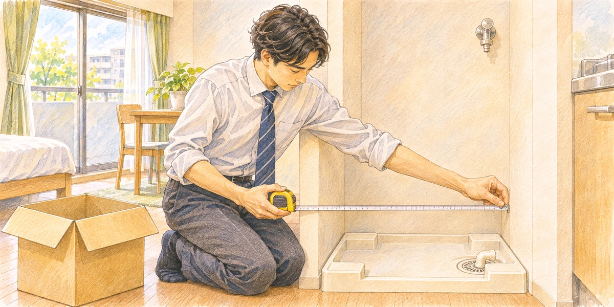

単身赴任の家電費用 洗濯機を90日借りる料金例
容量4.2kgの洗濯機を90日借りる場合、中古の料金例は13,750円。必要な家電を絞り、配送や退去時の費用も含めて見積もります。

この記事の要点
- 容量4.2kgの洗濯機を90日借りる掲載例は、中古13,750円、新品26,400円です。
- 新品を買い、退去時の引き取りまで頼む料金を積み上げると56,254円からです。
- 借りる場合は配送先と返却日を確認し、赴任が延びたときの費用も調べます。
料金の確認日 2026年11月18日
この世帯の家計と見直せるところ
職種、収入、生活費、資産はモデルケースの仮定です。職種の平均や給与の実績を表すものではありません。この数字で通常月の収支を試算しました。本文の料金例は調べた掲載価格です。
- 本人・設備保守（正社員）
- 月収 330,000円（額面）／通常月の手取り 260,000円／年収 4,460,000円（額面・賞与 500,000円を含む）
- 配偶者・販売（パート）
- 月収 110,000円（額面）／通常月の手取り 100,000円／年収 1,320,000円（額面・賞与 0円を含む）
- 世帯の給与年収
- 5,780,000円（額面）
- 世帯の通常月の収入
- 360,000円（手取りと副収入の計）
- 副収入
- 0円
- 住居
- 95,000円
- 食費・日用品
- 75,000円
- 水道光熱・通信
- 30,000円
- 交通・保険
- 40,000円
- その他
- 55,000円
- 返済中の借入
- なし
- 毎月の生活費 合計
- 295,000円
- 毎月の貯金／投資への積立
- 30,000円／15,000円
- 現在の預貯金／投資資産
- 1,600,000円／300,000円
生活費と積立を引いた後に残る額
通常月は 360,000円 − 295,000円 − 30,000円 − 15,000円 で、残りは 20,000円です。年払い、臨時支出、今回の費用をここから見込みます。
表の支出は赴任前の家計です。赴任用の費用は別に置き、会社が後で精算する場合も、立て替える月に現金を用意します。通常月の残り2万円から中古レンタルの例13,750円を出すと、残りは6,250円です。通常の配送・設置・回収が含まれる例でも、時間指定などのオプションと精算月は別に書きます。
サービスを選ぶ前に確認すること
洗濯機だけ必要なら期間型の単品を比較します。冷蔵庫なども必要ならセットの総額を調べ、備え付けの品と重複がないかを最初に確認しましょう。
支払日が決まっている資金は、毎月の投資積立や値動きのある資産と別に把握します。お金を使う時期と口座の使い分けを読む ›
赴任先にある物から調べる
30代の会社員に東京都新宿区への90日間の単身赴任が決まりました。帰任後の自宅では洗濯機を置く場所を取れません。まず会社に、社宅の備品、家電の購入やレンタルに使える補助、先に立て替える金額を聞きました。
家電セットは必要な品だけの見積もりと比べる
冷蔵庫や電子レンジも必要なら、セットの内訳から備え付けの品を除きます。足りない品だけを単品で借りた額と、セットの支払総額を同じ期間で比べます。立て替えに必要な額と最終的な自己負担は、会社に精算できる分を分けて計算しましょう。
90日分のレンタル料金を比べる
容量4.2kgの全自動洗濯機を90日借りる税込料金例は、中古13,750円、新品26,400円です。新宿区の無料配送エリアで通常の配送・設置・回収を頼み、時間指定などの有料オプションを付けない条件では、それぞれの額が90日分の合計です。
購入して退去日に引き取ってもらう費用
新宿区の配送可能エリアで、容量4.5kgの全自動洗濯機を新品で買い、90日後に購入店に回収だけを頼む場合の例です。本体43,780円、通常の配送・設置3,850円、リサイクル料2,574円、収集・運搬2,750円、回収のみの出張費3,300円から。公開料金を足すと56,254円からです。追加工事がいる部屋や搬出が難しい部屋は、事前に見積もりを取ります。
自分で持ち込む場合と備え付けの場合
別の4.5kgの機種では、本体の公表価格24,900円と、指定引取場所に自分で持ち込む際のリサイクル料3,300円を合わせて28,200円です。配送・設置、退去時に自分で運ぶ費用、リサイクル券の払込手数料を別に見積もります。同じ家賃で備え付けの洗濯機を使えるなら、本体への追加支出は0円です。家賃が違うなら90日分の差を足します。
次の行動 返す日と延長費用を調べる
設置場所の幅と奥行き、蛇口と排水口の位置を確認し、必要な機種だけ見積もります。90日で返す場合と赴任が延びた場合の費用、退去日に回収できるかを聞いておきましょう。月額のサービスは、最低利用期間と途中解約にかかる費用を調べ、赴任期間に合う場合に候補へ入れます。
購入と90日レンタルの最終額を比べる
東京都新宿区への配送・設置と、退去時の運搬・回収やリサイクルまで含めます。会社の精算や売却額を差し引く場合は、金額が確定した分だけ両案に反映してください。